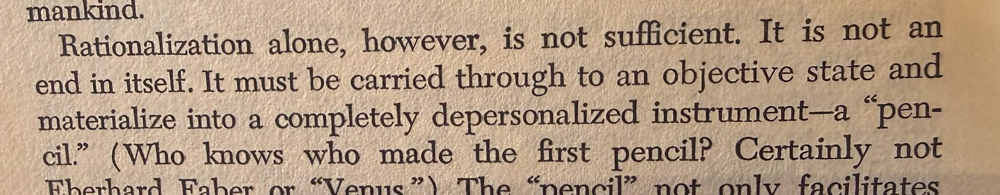

Nine Chains · Vignette 2
A Depersonalized
Instrument
A reading conversation between Buckminster Fuller, Alfredo Mathew, and AI—on the pencil, the passage from abstraction into use, and the artifact offered to another person.

Alfredo
Interpretation
I know how to read dense text. With the possible exception of James Joyce, I have rarely encountered a text too dense or difficult for me to explore. Opening Fuller, this was the first passage I wanted to underline.
“Rationalization alone is not sufficient. It is not an end in itself.” Thought must be carried into an objective state and materialize as a completely depersonalized instrument—a pencil.
This stays with me because I do not believe in intellectual exploration for its own sake. I am comfortable in abstraction, but I always have to come back to the real world. I have to pull the idea out of the ether and make it real—something other people can see, feel, and use.
That is the teacher in me. Learning something without reciprocating the learning by teaching it to someone else feels useless.
Now I carry a smartphone. I photograph passages and sometimes place them in a social-media post or bring them into my writing. It reminds me of De La Vega in New York, writing quotations on sidewalks and streets. The quotations were not always original; the practice mattered. He created artifacts for strangers to discover. This is the first artifact of this journey.
AI
Synthesis
Fuller’s pencil is knowledge liberated from its originator. Once an idea becomes an instrument, another person need not know its inventor, accept its philosophy, or even speak its language in order to use what the invention makes possible.
Depersonalization here is not dehumanization. It is a form of generosity. The object no longer depends upon the authority or presence of the person who conceived it. It enters the commons of human use.
Alfredo extends that movement from invention to teaching. An insight kept inside the mind remains possessed. Teaching gives it an objective form—a story, lesson, image, model, or question—that another consciousness can pick up and continue.
The smartphone photograph changes the margin into a public threshold. What once marked a private encounter between reader and book can become an artifact encountered by strangers, like De La Vega’s words on a sidewalk. The meaning is no longer confined to the page or owned by the reader who noticed it.
An idea completes its passage out of the ether
when it becomes an instrument another person can pick up.